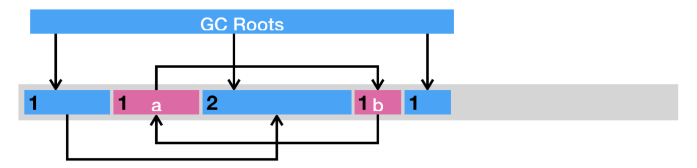

GC机制
随着程序的运行，内存中的实例对象、变量等占据的内存越来越多，如果不及时进行回收，会降低程序运行效率，甚至引发系统异常。 Java GC（Garbage Collection，垃圾回收）是Java程序执行自动内存管理的过程。
1. GC对象
Java程序被编译成字节码在JVM上运行，运行过程中会在内存的堆中创建对象，堆中有一部分对象仍然被使用，即程序的某些部分仍然维护着指向这些对象的指针；堆中还有一部分对象不再被使用，即程序中没有指向这些对象的指针，垃圾回收器找到这些不再被使用的对象并将其删除，以释放内存空间。下面通过一段代码来了解垃圾回收的对象：
public class TestClass {
public Object getObject() {
Object object1 = new String(“New_String”);
Object objectArray[] = new Object[1];
objectArray[0] = object1; //After this line, object1 and objectArray[0] are pointing to the same String object.
object1 = null; //After this line, object1 points to null but objectArray[0] is still pointing to the String object.
objectArray[0] = null; //After this line objectArray[0] also starts pointing to null so there is no reference left that is pointing to the String object.
//So it is now available for Garbage collection.
return object1;
}
}
从代码中可以看到，当没有引用指向“New_String”对象时，该对象就成为了垃圾回收的对象。
2. 如何判定对象是垃圾
有两种经典的算法用来判断对象是否为垃圾，一种是引用计数法（Reference Counting），一种是可达性分析算法（Reachability Analysis）。
2.1 引用计数法
引用计数法为每个对象添加一个引用计数器，用来统计指向该对象的引用个数。一旦某个对象的引用计数器为 0，则说明该对象已经死亡，便可以被回收了。
它的具体实现是这样子的：如果有一个引用，被赋值为某一对象，那么将该对象的引用计数器 +1。如果一个指向某一对象的引用，被赋值为其他值，那么将该对象的引用计数器 -1。也就是说，我们需要截获所有的引用更新操作，并且相应地增减目标对象的引用计数器。
除了需要额外的空间来存储计数器，以及繁琐的更新操作，引用计数法还有一个重大的漏洞，那便是无法处理循环引用对象。
举个例子，假设对象 a 与 b 相互引用，除此之外没有其他引用指向 a 或者 b。在这种情况下，a 和 b 实际上已经死了，但由于它们的引用计数器皆不为 0，在引用计数法的心中，这两个对象还活着。因此，这些循环引用对象所占据的空间将不可回收，从而造成了内存泄露。

2.2 可达性分析算法
目前JVM的主流垃圾回收器采用的是可达性分析算法。该算法的本质是将GC Roots集合作为初始的存活对象集合，然后从该合集出发，探索所有能够被该集合引用到的对象，并将其加入到该集合中。未被探索到的对象便是可以被垃圾回收的对象。GC Roots可以理解为从堆外指向堆内的一些活跃的引用。
GC Roots包含但不限于以下几种：
- 虚拟机栈中引用的对象
- 本地方法栈中JNI引用的对象，包括global handles和local handles
- 方法区中类静态属性引用的对象
- 方法区中常量引用的对象
- 当前所有正在被调用的方法的引用类型的参数/局部变量/临时值，即所有Java线程当前活跃的栈帧里指向GC堆里的对象的引用
- JVM的一些静态数据结构里指向GC堆里的对象的引用，例如HotSpot VM里的Universe里有很多这样的引用
- Java 方法栈桢中的局部变量；
可达性分析可以解决引用计数法所不能解决的循环引用问题。举例来说，即便对象 a 和 b 相互引用，只要从 GC Roots 出发无法到达 a 或者 b，那么可达性分析便不会将它们加入存活对象合集之中。
虽然可达性分析的算法本身很简明，但是在实践中还是有不少其他问题需要解决的。比如在多线程环境下，其他线程可能会更新已经访问过的对象中的引用，从而造成误报（将引用设置为 null）或者漏报（将引用设置为未被访问过的对象）。误报并没有什么伤害，Java 虚拟机至多损失了部分垃圾回收的机会。漏报则比较麻烦，因为垃圾回收器可能回收事实上仍被引用的对象内存。一旦从原引用访问已经被回收了的对象，则很有可能会直接导致 Java 虚拟机崩溃。
3. Stop-the-world 以及安全点
怎么解决2.2中提到的问题呢？在 Java 虚拟机里，传统的垃圾回收算法采用的是一种简单粗暴的方式，那便是 Stop-the-world，停止其他非垃圾回收线程的工作，直到完成垃圾回收。这也就造成了垃圾回收所谓的暂停时间（GC pause）。
Java 虚拟机中的 Stop-the-world 是通过安全点（safepoint）机制来实现的。当 Java 虚拟机收到 Stop-the-world 请求，它便会等待所有的线程都到达安全点，才允许请求 Stop-the-world 的线程进行独占的工作。安全点的目的是找到一个稳定的执行状态。在这个执行状态下，Java 虚拟机的堆栈不会发生变化。这么一来，垃圾回收器便能够“安全”地执行可达性分析。
举个例子，当 Java 程序通过 JNI 执行本地代码时，如果这段代码不访问 Java 对象、调用 Java 方法或者返回至原 Java 方法，那么 Java 虚拟机的堆栈不会发生改变，也就代表着这段本地代码可以作为同一个安全点。
只要不离开这个安全点，Java 虚拟机便能够在垃圾回收的同时，继续运行这段本地代码。
由于本地代码需要通过 JNI 的 API 来完成上述三个操作，因此 Java 虚拟机仅需在 API 的入口处进行安全点检测（safepoint poll），测试是否有其他线程请求停留在安全点里，便可以在必要的时候挂起当前线程。
除了执行 JNI 本地代码外，Java 线程还有其他几种状态：解释执行字节码、执行即时编译器生成的机器码和线程阻塞。阻塞的线程由于处于 Java 虚拟机线程调度器的掌控之下，因此属于安全点。
其他几种状态则是运行状态，需要虚拟机保证在可预见的时间内进入安全点。否则，垃圾回收线程可能长期处于等待所有线程进入安全点的状态，从而变相地提高了垃圾回收的暂停时间。
对于解释执行来说，字节码与字节码之间皆可作为安全点。Java 虚拟机采取的做法是，当有安全点请求时，执行一条字节码便进行一次安全点检测。
执行即时编译器生成的机器码则比较复杂。由于这些代码直接运行在底层硬件之上，不受 Java 虚拟机掌控，因此在生成机器码时，即时编译器需要插入安全点检测，以避免机器码长时间没有安全点检测的情况。HotSpot 虚拟机的做法便是在生成代码的方法出口以及非计数循环的循环回边（back-edge）处插入安全点检测。
那么为什么不在每一条机器码或者每一个机器码基本块处插入安全点检测呢？原因主要有两个。
第一，安全点检测本身也有一定的开销。不过 HotSpot 虚拟机已经将机器码中安全点检测简化为一个内存访问操作。在有安全点请求的情况下，Java 虚拟机会将安全点检测访问的内存所在的页设置为不可读，并且定义一个 segfault 处理器，来截获因访问该不可读内存而触发 segfault 的线程，并将它们挂起。
第二，即时编译器生成的机器码打乱了原本栈桢上的对象分布状况。在进入安全点时，机器码还需提供一些额外的信息，来表明哪些寄存器，或者当前栈帧上的哪些内存空间存放着指向对象的引用，以便垃圾回收器能够枚举 GC Roots。
由于这些信息需要不少空间来存储，因此即时编译器会尽量避免过多的安全点检测。
不过，不同的即时编译器插入安全点检测的位置也可能不同。以 Graal 为例，除了上述位置外，它还会在计数循环的循环回边处插入安全点检测。其他的虚拟机也可能选取方法入口而非方法出口来插入安全点检测。
不管如何，其目的都是在可接受的性能开销以及内存开销之内，避免机器码长时间不进入安全点的情况，间接地减少垃圾回收的暂停时间。